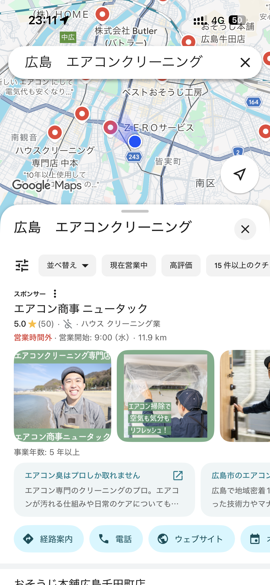
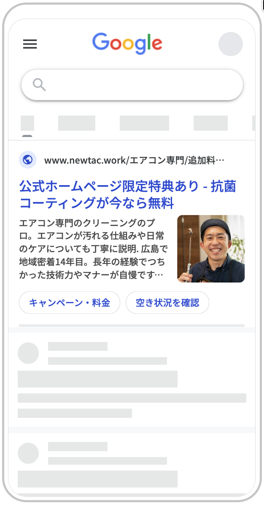
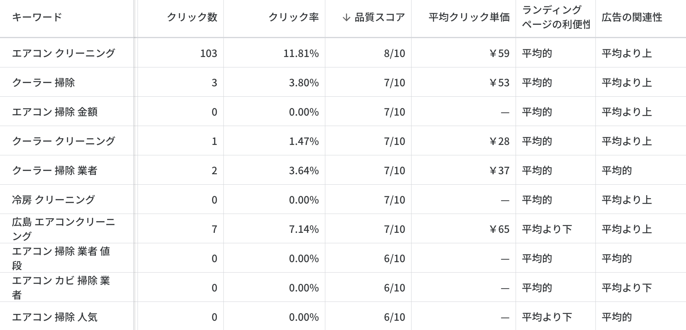
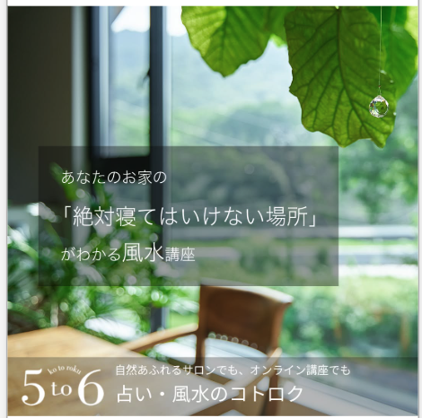
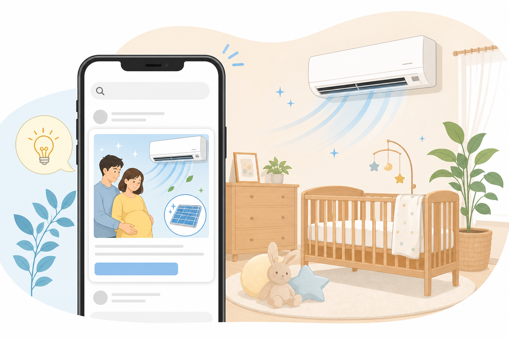
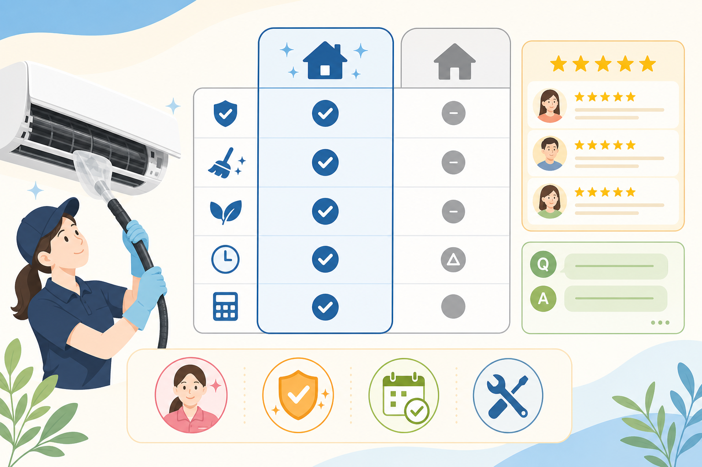

Webの施策には広告、SEO、SNS、LP改善など、打ち手はいろいろあります。
ITCチュートリアル
Webマーケティング
支援フレーム
2026-05-21
㈱BLOOM /金畑商事(同)
道畑優紀
2026-05-21
㈱BLOOM /金畑商事(同)
道畑優紀
本日のチュートリアルを進めるにあたっての目的と、
皆様に持ち帰っていただく「伴走支援のOKライン」を共有します。
ITCが普段の支援で行っている課題整理スキルを、
Webマーケティングの文脈に引き寄せて考えていきます。
Webの施策には広告、SEO、SNS、LP改善など、打ち手はいろいろあります。
大事なのは「Web上のどこで詰まっているか」を見立てることです。
支援している、または支援するかもしれない事業者を1社思い浮かべながら、一緒に整理していきましょう。
新規事業で広告営業・ネット集客に従事。
月間400-1200万円規模の広告やSEOなどのWeb戦略を扱う。
完全成果報酬型で自腹で広告を出稿し、
(総額120万円くらい)広告運用とWeb施策を実践。
MBAを取得。在学中にITコーディネータ研修を
受講し、支援の考え方を学ぶ。
保険代理店向けRPA、kintoneカスタム業務システムの設計・実装を支援。
今日は皆さんのスキルにWebマーケの整理フレームをプラスし、
「こう整理すると解決策が見つけやすい」という方法論をお伝えします。
「お客さんは何がしたくて、どこで詰まってるか」を的確に把握する
特定した詰まりに対して、適切な解決策（打ち手）を当てはめる
施策が効いているか、客観的な数字で検証できる仕組みを作る
「お客さんは何がしたくて、どこで詰まってるか」を整理する。
数字を分解し、感覚ではなく根拠に基づいて課題を特定します。
申請者の事業や目標がどのモデルに当てはまるかをまず確認する
モデルが違えば、見るべき数字も打ち手も変わる。複数モデルが混在する場合は優先順位をつける。
オンラインで商品を販売
問い合わせや資料請求の獲得
広告収入や認知拡大を目指す
既存顧客のサポート・満足度向上
サービスの継続的な利用促進
この3つのどこが詰まっているかで、選ぶべき打ち手が明確に変わります。
ユーザーがサイトにアクセスしていない状態。[PVの課題]
アクセスはあるが、求めている情報がなく即離脱する状態。[PV→CVの課題]
検討はしたが、入力フォームが面倒などで最後の行動に至らない。[CVRの課題]
ステップごとの「歩留まり（通過率）」を可視化することで、感覚ではなく根拠をもって課題を特定できます。
「でも、こんなに細かくステップを追うのって大変そう…」「HPすらない支援先では無理じゃない？」
—— そう感じる方もおられるかもしれません 👉
「サイトを作ればすぐ売れる」という幻想を、現実の数値（各プロセスの歩留まり）で見せて期待値をコントロールするため。
「とりあえずHP刷新」といった思いつきや、手段の目的化に振り回されない。全体設計(前ページ参考)から逆算し、効果のある手段を選ぶ。
申請者には「まずはフォームの入力エラーを減らしましょう」と、目の前の具体的アクションに翻訳して伝えるため。
| 指標 | マッチングA | パートナーB | 自社サイト | 全体 |
|---|---|---|---|---|
| リーチ (公称値等) |
8,000 (公称値) |
非公開 (-) |
800 (想定) |
- (-) |
| 訪問者 (リーチ→訪問) |
500 (6.25%※) |
500 (-) |
200 (-) |
1,200 (-) |
| フォーム (訪問→到達) |
125 (25.0%) |
50 (10.0%) |
50 (25.0%) |
225 (18.8%) |
| CV（問い合わせ） (フォーム→CV) |
100 (80.0%) |
20 (40.0%) |
40 (80.0%) |
160 (71.1%) |
| 商談 (CV→商談) |
20 (20.0%) |
8 (40.0%) |
8 (20.0%) |
36 (22.5%) |
| 成約 / 受注 (商談→受注) |
5 (25.0%) |
4 (50.0%) |
2 (25.0%) |
11 (30.6%) |
リードモデルは、フォーム前後と商談以降を分けて見ると、集客・受け皿・営業品質のどこに打ち手があるかを誤りにくくなります。
| 指標 | モールA | フリマB | 自社サイト | 全体 |
|---|---|---|---|---|
| リーチ (公称値等) |
40,000 (公称値) |
30,000 (公称値) |
6,000 (想定) |
- (-) |
| 商品一覧 (リーチ→一覧) |
3,000 (7.5%) |
15,000 (50.0%) |
3,000 (50.0%) |
21,000 (27.6%) |
| 商品詳細 (一覧→詳細) |
300 (10.0%) |
300 (2.0%) |
300 (10.0%) |
900 (4.3%) |
| カート (詳細→カート) |
30 (10.0%) |
30 (10.0%) |
30 (10.0%) |
90 (10.0%) |
| 手続き (カート→手続き) |
24 (80.0%) |
24 (80.0%) |
24 (80.0%) |
72 (80.0%) |
| CV（購入） (手続き→購入) |
6 (25.0%) |
6 (25.0%) |
6 (25.0%) |
18 (25.0%) |
ECモデルは、一覧・詳細・カート・購入手続きを分けることで、商品訴求の問題と決済前後の摩擦を切り分けられます。
| 指標 | Organic Search (自然検索) |
Paid Search (有償検索) |
Referral (参照元サイト) |
Direct / Email (直接/メール) |
全体 |
|---|---|---|---|---|---|
| 訪問者 (セッション) |
1,500 | 300 | 800 | 400 | 3,000 |
| フォーム到達 (訪問→到達) |
45 (3.0%) |
24 (8.0%) |
32 (4.0%) |
20 (5.0%) |
121 (4.0%) |
| CV(問合せ等) (到達→CV) |
18 (40.0%) |
12 (50.0%) |
16 (50.0%) |
14 (70.0%) |
60 (49.6%) |
| CVR (訪問→CV) |
1.2% | 4.0% | 2.0% | 3.5% | 2.0% |
| 商談数 (CV→商談) |
9 (50.0%) |
8 (66.7%) |
6 (37.5%) |
7 (50.0%) |
30 (50.0%) |
| 受注数 (商談→受注) |
2 (22.2%) |
3 (37.5%) |
1 (16.7%) |
2 (28.6%) |
8 (26.7%) |
流入元（チャネル）ごとにユーザーの温度感や競合バッティング度は異なります。全体平均CVR 2.0%で一括判断せず、ボトルネックが「集客」「サイト」「営業」のどこにあるかを切り分けましょう。
「どのモデルで、どのプロセスに詰まりが生じているか」を切り分けられるようにする。
💬 「なるほど、やりたいことはコレで、今はここで詰まっていそうですね」メディア、EC、リード獲得など、ビジネスモデルの定義から始める。
「集客 / 理解・信頼 / 行動」のどこでユーザーが離脱しているかを見極める。
感覚ではなく根拠に基づいて課題と数値をリンクさせる。
Ch1で見つけた「詰まり」に対して、
どの施策をぶつけるかを発注・申請の言葉に翻訳します。
施策は、認知・理解・行動のどこを動かすかで選びます。
短期成果を狙うなら、まずは行動に近い接点から始めます。
まだ探していない人に接点を作り、選択肢に入るきっかけを作る。

第三者の信用や具体例で、不安を減らし比較検討を進める。

困りごとが検索語句に出た人へ、候補としてすぐ届ける。

課題に対応する施策は概ね下記のように整理できます。
| 詰まり | 主な施策 | 役割 | 予算の受け皿 |
|---|---|---|---|
| 集客不足 | 検索広告、SNS広告、ディスプレイ広告、MEO、SEO内部対策 | サイトや店舗への流入を増やす |
オ. 広告宣伝費 (媒体費・運用費) イ. Webサイト構築費 (SEO内部) ア. 市場調査費 (市場・需要調査) |
| 理解不足 | LP制作・改修、写真・動画素材撮影、事例・FAQ追加、商品マスタ整備 | 選ばれる理由と不安解消の材料を増やす |
イ. Webサイト構築費 (LP・サイト改修) ウ. コンテンツ制作費 (事例・写真動画) ア. 市場調査費 (ペルソナ・競合調査) |
| 行動導線不足 | フォーム改善(EFO)、CTA改修、電話・LINE導線、リターゲティング | 問い合わせ・予約・購入の最後の行動を促す |
イ. Webサイト構築費 (フォーム・導線改修) オ. 広告宣伝費 (再接触広告) |
| 測定不足 | GA4設定、タグ・アクセス解析設定、コンバージョン(CV)計測設定 | 施策後に、効いた理由と止まった場所を追えるようにする | エ. データ計測構築費 (GA4・CV設定) |
| 運用の定着不足 | CMS操作指導、更新手順書・問い合わせ対応マニュアル整備 | 支援終了後も自力で改善運用サイクルを回す | カ. 自走化・内製化支援費 (操作指導・手順書作成) |
まずは知ってもらうための集客。顕在層・潜在層へ届ける広告設計。
興味を持った人を逃さない受け皿。選ばれる理由と信頼の設計。
最後の行動を後押し。フォームやスマホ対応など導線の最適化。

検索や地図で探している瞬間に、候補として表示されます。

順位は入札額だけでなく、広告とLPの関連性でも変わります。
検索広告はマッチタイプやブランドワードの特性を理解し、行動に近い語句から狙います。
狙った特定の語句にピンポイントで出す。無駄クリックを防ぎ、CVに近い見込み客を効率よく回収する。
キーワードと近い意図を幅広く拾う。AIの学習と組み合わせて、想定外の需要を開拓できる。
CVRが極めて高いが、他社競合との獲得対抗や商標トラブルなど、特有のビジネス判断が必要。
獲得数を増やすほど、次の1件のパフォーマンスは悪化する。
ディスプレイ広告は一案固定ではなく、反応で差し替えます。


画像とコピーの組み合わせを試す。
どれが反応されたかを比べる。
弱い案と見飽きられた案を入れ替える。
普段見ている媒体や人を通じて、情報収集に近い形で届けます。
地域媒体や専門サイトで、悩み・選び方・体験を記事として紹介する。

特定ジャンルの視聴者へ、使用感や比較の文脈で紹介する。
発注費用以上に時間的な労力や企画アイデア労力が必要なため、出稿手続きの体力も必要です。
出稿報酬はyoutuberの場合フォロワー×X
円(3-4円)という計算が多いようです。
見込み客が普段見ている媒体や人を選ぶ。ローカルメディアや専門特化メディアが候補。
記事、動画、体験レビュー、比較企画など、情報収集の文脈に沿った構成にする。
制作費などの実費以上に、訴求のすり合わせやNG表現、PR表記の調整など打合せコストがかかる。
「掲載先（誰に）」「伝え方（どう）」「計測方法（どう測るか）」をセットで決めて合意する。
まずは知ってもらうための集客。顕在層・潜在層へ届ける広告設計。
興味を持った人を逃さない受け皿。選ばれる理由と信頼の設計。
最後の行動を後押し。フォームやスマホ対応など導線の最適化。
「正解のペルソナ」を短時間の訪問で導くことは困難です。
今のLPが誰にも刺さっていないという可能性をチェックします。
来てほしい相手が曖昧なら、誰に向けた訴求なのか判断基準がブレてしまいます。
広告から来ているのにCVがゼロなど、期待値とのズレが数字に出ている状態。
「安い 引越し」で検索したのに、一番上の画面が「創業50年の実績」になっている。
「地域No.1」「すべてのお客様に」など、ターゲットがボヤけている状態。
「誰でもよい」では訴求がぼやけます。今回はエアコンクリーニングで、清潔感と安心感に反応する相手を具体化します。
| 氏名 / 年齢 | 佐藤 詩織（さとう しおり） / 28歳 |
|---|---|
| 家族構成 | 夫、妊娠中の第一子（まもなく出産予定） |
| 生活背景 | 産休中。出産前に部屋を整えたい。SNSで育児・暮らし・掃除の情報をよく見る。 |
| 検討のきっかけ | エアコン内部のカビやにおいが気になり、「赤ちゃんを迎える前に空気環境を整えたい」と感じた。 |
| 選ぶ理由 | 清潔感のあるスタッフ、丁寧な養生、作業前後の写真、子育て世帯への配慮が見えること。 |
| 離脱する不安 | 知らない男性が部屋に入る不安、追加料金、部屋が汚れる心配、作業品質が見えないこと。 |
| 刺さる訴求 | 「赤ちゃんを迎える準備」「清潔で丁寧」「女性スタッフ同行可」「追加料金なし」。価格より安心の根拠を優先。 |
AIDMAで、認知から予約までの心理変化・接点・伝える材料をそろえます。
| AIDMA |
 Attention
気づく
|
Interest
興味を持つ
|
Desire
頼みたくなる
|
 Memory
候補に残す
|
Action
予約する
|
|---|---|---|---|---|---|
| 心理 | 赤ちゃんを迎える前に、空気やカビが急に気になる。 | 自分の状況に合いそう。普通の掃除業者とは違うかも。 | ここなら部屋を汚さず、安心して任せられそう。 | 他社と比べても、清潔感と配慮が思い出せる。 | 料金と日程が分かれば、今のうちに予約したい。 |
| 接点 | 置きチラシ、Instagram広告、育児情報サイト | 広告LPのFV、人柄の開示、事業スタンス | LP中盤の実績、before/after 作業写真 | 口コミ、料金表、キャンペーン | LINEでの空き日程、予約相談、電話 |
| 役割 | 悩みを言語化する | 自分ごと化させる | 安心の根拠を示す | 比較で残る特徴を作る | 最後の不安を消す |
| 届けるメッセージ | 赤ちゃんを迎える部屋に、清潔な空気を。 | 妊娠中・子育て世帯に選ばれる丁寧な清掃。 | 養生、作業前後写真、清潔なスタッフを明示。 | オリジナルイラストで想起させる。 | 空き日程を見てその場で予約。 |


差別化は必要。ただし、ユーザーが期待する文脈、マーケットの成熟度を外しすぎると逆効果です。


どの整体院も全く同じキャッチコピーを使い回すため、ユーザーからすれば見分けがつかないのが広島の現状。 このマーケット環境を変えるのではなく、申請者のためにどう活用するのかが発想できると良い。

「筋肉こそ至高」「ボディビルアピール」など、院長自身の強みを独りよがりにアピールしすぎた結果、ユーザーの期待（優しく痛みを治してほしい）から完全にズレて不安にさせている例。
ペルソナ設計を申請者とおこなう必要は必ずしもありません。
まずは既存のLPやサイトがターゲットに「刺さっていないサイン」が出ていないかをチェックします。
来てほしい相手が曖昧なら、誰に向けた訴求なのか判断基準がブレてしまいます。
検索広告から来ているのにCVがゼロなど、期待値とのズレが数字に出ている状態。目安CVR 0.5%未満
「安い 引越し」で検索して訪問してほしいのに、一番上の画面が「創業50年の実績」になっている。
「地域No.1」「すべてのお客様に」など、ターゲットがボヤけている状態。
ターゲット設定のチェックリストとは別に、「離脱の言い訳」を消せているかも確認します。
ただコンテンツを用意するだけではなく、ユーザーの不安を解消する内容を意識します。
| 種類 | 確認項目 | 消したい不安 | 質の高い載せ方 |
|---|---|---|---|
| 条件 | 料金 | 高すぎないか、追加請求はないか | 目安金額や追加費用の有無がある |
| 事例 | 導入事例 | 自分の悩みも解決できるか | Before / After のストーリーがある |
| 手順 | 提供の流れ | しつこく営業されないか | 相談だけでもOKなど行動ハードルを下げる |
| 疑問 | FAQ | 直接聞きにくい疑問がある | 本音の懸念に先回りして答える |
| 約束 | 保証・約束 | 失敗して損をしたらどうしよう | 無理な営業をしない、返金保証、対応範囲の明示 |
| 評価 | 第三者評価 | 自称しているだけではないか | 口コミ、メディア掲載、資格、根拠ある実績 |
| 人 | 会社・スタッフ | 誰が対応するのか、騙されないか | 代表の顔、実店舗、スタッフ、現場の雰囲気が分かる |
まずは知ってもらうための集客。顕在層・潜在層へ届ける広告設計。
興味を持った人を逃さない受け皿。選ばれる理由と信頼の設計。
最後の行動を後押し。フォームやスマホ対応など導線の最適化。
リニューアル時に助言すべき導線の抜けを仕様に入れます。
問い合わせ、予約、電話など、次に押す場所がすぐ分かるか。
項目数、必須項目、エラー表示が行動の負担になっていないか。
電話、LINE、フォームなど、相手が使いやすい導線があるか。
表示が遅すぎないか。特にスマホで確認する。
PC版の単純縮小で、読みにくい・押しにくい状態を避ける。
原因を当てにいくより、消去法で絞るだけでも価値があります。
施策の無駄打ちを防ぐため、「認知・理解・行動」の
各フェーズでチェックすべき急所を点検します。
顕在層には検索広告、潜在層にはディスプレイ・SNS広告を使い分けているか。
ペルソナ設定を見直し、顧客の不安を解消する材料がLP等に揃っているか。
フォームの使いづらさやスマホ表示の遅さなど、CVRを阻害していないか。
GA4を導入するだけでは測定設計は完成しません。
「何を成果とし」「どこで誰を比較するか」を決めて、判断のための数字を握ります。
測定設計の実装や操作はベンダに依頼して問題ありません。
一方、毎月どの数字を見て、次の判断（意思決定）につなげるかは専門家のアドバイスが重要です。
MELSAモデルに従って、問い合わせ、購入、予約、応募など、「何が増えたらビジネス上の成功か」を明確に定義します。
最終CVの手前にある重要な中間行動を定義し、顧客がどこで「詰まって」いるかを特定できるようにします。
月次推移、施策の前後、チャネル（流入元）別など、どういう切り口で数字を比較して判断するかを決めます。
実は、効果が出ていると申請者は測定数値を細かく読みません。「売上が上がっている」という事実だけでハッピーになり、信頼して任せてくれます。
本当に辛いのは効果が出ないとき。ここで「これから測りましょう」と提案すると、「なぜ最初から測ってないんだ！」と火に油を注ぐことになります。
効果が出ないときでも、事前に仕込んだデータ（分析材料）があれば安心。原因が特定できているため、次に打つべき具体的な改善策をすぐに提案できます。
「GA4を設定しておきました」だけでは、ただアクセス数を数えているだけです。ビジネスに合わせたカスタム設定が必要です。
デフォルトのGA4は標準のPVやスクロールしか測れません。ビジネスに重要な顧客行動を可視化するにはカスタム設計が必要です。
実装作業はベンダに任せてOKですが、指示が必要です。ITCが主導して要件を定義します。
「CVが増えない」という結果だけでは、集客が悪いのか、フォームが使いづらいのか判断できません。手前のアクションを可視化します。
フォーム1つでも、次の5ステップに分けて計測することができます。
マイクロCVは、企業の成果モデル（MELSA）ごとに定石はあります。申請者のモデルに合わせて要件を決めましょう。
| 成果モデル | 最終CV（ビジネスの成果） | マイクロCV（中間成果・行動の指標）の具体例 |
|---|---|---|
| E：ECモデル | 商品の購入完了 | カート追加ボタンの押下、購入手続き開始、サイズ表やスペック表の展開、お気に入り追加 |
| L：リード獲得モデル | 問い合わせ、資料請求、見積依頼 | 入力フォームへの到達、フォーム入力開始、お役立ち資料のダウンロードボタン押下 |
| S：サポートモデル | 自己解決（問い合わせ削減） | FAQページの閲覧・検索、チャットボットの起動、解説動画の視聴完了 |
| A：アクティブモデル | 会員の継続利用、コミュニティ参加 | お気に入り登録、コミュニティでの投稿・いいね、プロフィールの設定 |
| M：メディア/認知モデル | 再訪、メルマガ登録、SNS保存 | 特定動画の視聴完了、記事のスクロール率（50%以上）、指名キーワードでの自然流入 |
マイクロCVを見ることで、最終CVの数字だけでは分からない「顧客の本当の心理」が見えてきます。
キャリアアドバイザーがあなたをフルサポート
飲食＝ブラックのイメージから「ホワイト企業紹介」の需要が最大と予測したが、実際は「面接に1人で行く不安」が最大のボトルネックと判明。
「ホワイト企業紹介」ではなく「面接同行で内定まで寄り添う安心感」をLPのメイン訴求に引き上げ、全体のCVRが大幅に向上！
伴走支援のゴールは、「課題の特定」「施策の一致」「測れる化」を繋ぎ、クライアント自身が判断できる状態を作ることです。
成果モデルを定義し、感覚ではなく「集客/理解/行動」のどこがボトルネックかを特定する。
💬 「なるほど、やりたいことはコレで、今はここで詰まっていそうですね」特定したボトルネックに対し、ターゲットの心理（不安・信頼材料）に合う施策を当てる。
💬 「それならこの施策がぴったりです！こっちの方が効果的ですよ」施策が効いているか検証するため、最終CVと中間（マイクロCV）の測定設計を整える。
💬 「まずはここを数字で可視化して、状況を評価できるようにしましょう！」
ディスプレイ広告は物販だけではありません。まだ検索していない人に、不安・関心・比較軸を思い出してもらう媒体です。
| 媒体 | 得意な役割 | 向きやすい場面 | 事例を見る観点 |
|---|---|---|---|
| search検索広告 | 今探している顕在層を拾う | 地域サービス、修理、士業、BtoB、比較検討が始まった商材 | 検索語句、広告文、LPの内容が一致しているか |
| web_assetディスプレイ広告 | 潜在的な不安や関心を起こす | 転職、教育、金融、住宅、採用、BtoB資料請求、リターゲティング | 一瞬で「自分のことかも」と思える課題提示か |
| diversity_3SNS広告 | 属性・興味・生活文脈で届ける | D2C、店舗、採用、イベント、写真や体験で伝わる商材 | ターゲットのタイムラインに自然に入る見せ方か |
| play_circle動画広告 | 使用感・雰囲気・手順を短時間で伝える | 教育、観光、採用、店舗、使い方説明が必要な商品・サービス | 冒頭数秒で課題やベネフィットが伝わるか |
| article記事広告 | 理解と信頼を作る | 高単価、専門サービス、地域密着、比較検討に時間がかかる商材 | 売り込みではなく、選び方や判断材料になっているか |

転職サイトのバナーとして広く記憶された広告。成果数値を断定するのではなく、一瞬で不安を自分ごと化した表現として分解する。
| 型 | ねらい | 表現例 |
|---|---|---|
| 不安喚起型 | 薄々感じている不安を言語化する | このままで大丈夫？ 相場より損していない？ |
| 自分ごと化型 | 「自分の話かも」と思わせる | 30代の転職、子育て世帯、地域名、業種名 |
| ギャップ提示型 | 現状と理想の差を見せる | 知らないだけで選択肢がある、今より改善できる |
| 診断誘導型 | クリック後の行動を軽くする | 無料診断、相場チェック、適性チェック |
| 権威・実績型 | 信頼材料で迷いを減らす | 導入社数、専門家監修、受賞、口コミ評価 |
| 限定・緊急型 | 先送りを防ぐ | 期間限定、残り枠、今月分、初回特典 |
| 比較・損失回避型 | 選ばない損を意識させる | 他社比較、料金差、放置コスト、失敗例 |
| 共感・物語型 | 感情移入で関心を作る | 利用者の悩み、Before/After、あるある場面 |
予算の「箱」を作るだけなら顧客仮説は不要です。しかし、この観点がないと「中身がふわっとした無駄な施策」を繰り返してしまいます。
| 観点 | ❌ 顧客仮説なし（とりあえず予算化） | ⭕ 顧客仮説あり（施策を仕様化） |
|---|---|---|
| 発注の解像度 | 「とりあえずLPを綺麗にリニューアルして」「なんとなく事例を載せて」 | 「顧客の『本当に効果ある？』という不安を消すために、施工実績の写真撮影と保証FAQ追加が必要」 |
| 着地する予算 | なんとなく「HP制作費」の一括見積もり。 仕様が曖昧なため予算がブレやすい。 |
【アプローチの具体化】 ・イ. Webサイト構築費（保証FAQ追加） ・ウ. コンテンツ制作費（実績写真撮影） |
| もたらす結果 | 制作会社の言い値で予算がブレる。 効果が出ず、同じ失敗を繰り返す。 |
施策の解像度が高まり、発注品質が向上。 無駄打ちを防ぎ、効果が出る仕様になる。 |
ECは「来ていない」「比較材料が足りない」「買う直前で止まる」を分けると、最初の打ち手を外しにくくなります。
| ボトルネック | まず確認する症状 | 最初に検討する施策 | 見る指標 |
|---|---|---|---|
| groups集客 | PV・商品詳細閲覧が少ない。検索やSNSで商品カテゴリに出会えていない。 |
|
流入数、商品詳細閲覧率、流入元別CVR |
| psychology理解・信頼 | 商品詳細は見られるが、カート投入が少ない。価格・品質・使用感への不安が残る。 |
|
商品詳細→カート率、レビュー閲覧、FAQ閲覧 |
| touch_app行動・対応 | カート投入後に離脱する。購入手続き、送料表示、決済、会員登録で止まる。 |
|
カート→購入率、決済離脱率、カゴ落ち復帰率 |
リード獲得は、問い合わせ数だけでなく「見込み度」と「商談化」まで分けると、施策の優先順位を決めやすくなります。
| ボトルネック | まず確認する症状 | 最初に検討する施策 | 見る指標 |
|---|---|---|---|
| groups集客 | LPやサービスページへの流入が少ない。検索需要、比較検討層、地域見込み客に届いていない。 |
|
流入数、検索語句、LP到達数、資料DL数 |
| psychology理解・信頼 | 流入はあるが問い合わせが少ない。価格、実績、対応範囲、導入後の効果が判断できない。 |
|
LP滞在、事例閲覧、フォーム到達率 |
| touch_app行動・対応 | フォーム到達後に離脱する。問い合わせ後の返信が遅く、商談化・受注につながらない。 |
|
フォーム完了率、初動時間、商談化率、受注率 |